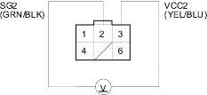
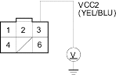
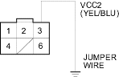
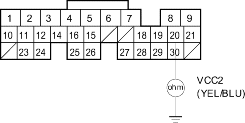

DTC 12: EGR Insufficient Flow
- Reset the ECM/PCM (see page 11-168).
- Jump the SCS line (see step 2 on page 11-167).
- Test-drive necessary: Start the engine. Hold the engine at 3,000 rpm (min-1) with no load (in Park or neutral) until the radiator fan comes on, then let it idle. Drive the vehicle on the road for about 10 minutes. Try to keep the engine speed in the 1,700-2,500 rpm (min-1) range.
Is the MIL on and does it indicate DTC 12?
YES |
- Go to step 4. |
NO |
- Intermittent failure, system is OK at this time. Check for poor connections or loose wires at the EGR valve and at the ECM/PCM. |

- Turn the ignition switch OFF.
- Disconnect the EGR valve 6P connector.
- Turn the ignition switch ON (II).
- At the harness side, measure voltage between the EGR valve 6P connector terminals No. 2 and No. 3.

Is there about 5 V?
YES |
- Go to step 13. |
NO |
- Go to step 8. |
- Measure voltage between the EGR valve 6P connector terminal No. 3 and body ground.

Is there about 5 V?
YES |
- Repair open in the wire between the EGR valve and the ECM/PCM (A10). |
NO |
- Go to step 9. |
- Turn the ignition switch OFF.
- Disconnect ECM/PCM connector A (31P).
- Connect the EGR valve 6P connector terminal No. 3 and body ground with a jumper wire.

- Check for continuity between ECM/PCM connector terminal A20 and body ground.

Is there continuity?
YES |
- Substitute a known-good ECM/PCM and recheck. If symptom/indication goes away, replace the original ECM/PCM. |
NO |
- Repair open in the wire between the EGR valve and the ECM/PCM (A20). |